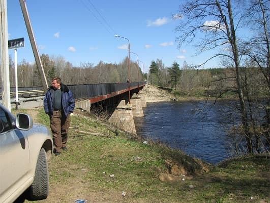
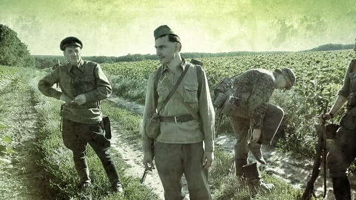
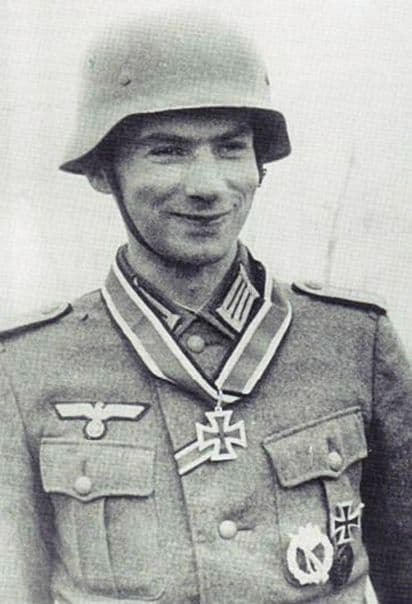
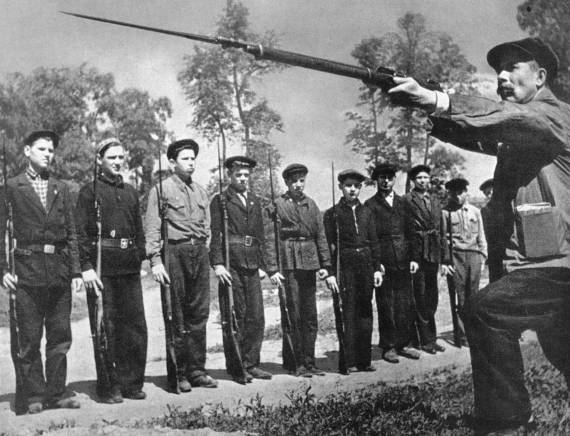

Мост через Лугу в районе Ивановского был захвачен без боя полком особого назначения Бранденбург 800. Воинское формирование состояло из военнослужащих, свободно владеющих не менее чем двумя языками, для выполнения диверсионных задач.
Немецкие диверсанты полка "Брандендург 800" в красноармейской форме. Все чисто говорят по-русски.

А это их командир Адриан Арминович фон Фёлькерзам. Внук русского адмирала, встретившего смерть в Цусимском проливе, правнук русского генерала, и сын русского искусствоведа. Рожденный в 1914 году в Санкт-Петербурге.

По воспоминаниям соратника: - "Застенчивый, очень спокойный. Блестящий аналитик".
Кому понадобилось сделать так, чтобы такие как он оказались врагами России?

Алексей Валерьевич Исаев
Иной 1941
От границы до Ленинграда
Предназначенная для обороны на этом участке 2-я ДНО еще находилась в стадии перевозки по железной дороге, и ее первые эшелоны только разгружались на станции Веймарн. Началось одно из самых драматичных сражений за плацдармы в истории 1941 г.
Мост через Лугу у деревни Поречье обороняло подразделение 2-й дивизии НКВД численностью около полусотни бойцов.
Старший лейтенант Н. Богданов, начальник строительного участка оборонительного рубежа под Кингисеппом, вспоминал, что с самолета им был сброшен вымпел, предупреждавший о приближении немецких танков со стороны Гдова. Штаб строительного участка лейтенанта Богданова располагался в деревне Ивановское, дальше по шоссе от Поречья. На строительстве оборонительного рубежа было занято около 10 тыс. ленинградцев. Для захвата моста немцами было задействовано подразделение «Бранденбург», об этом упоминает историограф группы армий «Север» В. Хаупт. Описание событий Богдановым подтверждает именно эту версию:«Навстречу мне бежал боец-пограничник. Срывающимся от волнения голосом он рассказал о происшедшем. Их взвод нес охрану моста через Лугу. Они видели, как к часовому подъехала наша грузовая машина ЗИС. Остановилась. Часовой что-то спрашивал. Из кузова выскочило несколько солдат в красноармейской форме. Кто-то выстрелом убил часового. Своротив шлагбаум, машина двинулась вперед. Потом появились мотоциклисты. Бойцы взвода охраны выскочили из казармы. Залегли кто где, в суматохе даже не успели занять окопы и забыли в казарме ручной пулемет. Стреляли из винтовок. Подошла еще машина с вражескими автоматчиками. Ну, наши и побежали…»[259].
Из сборника "Ополченцы", Лениздат. 1975, стр. 29-37
Генерал-майор в отставке Герой Советского Союза Николай Степанович Угрюмов.
Спустя несколько дней после начала войны дивизию, в которой я служил заместителем командира, направили в район города Луги, на центральный участок Лужского оборонительного рубежа. Но выехать я не успел. Меня неожиданно вызвали в штаб Северного фронта. В отделе кадров сказали:
— Вы назначены командиром второй дивизии народного ополчения.
Я поинтересовался, что она собой представляет, где дислоцируется.
— Дивизии еще нет, — услышал в ответ, — вам придется ее формировать в Ленинграде, в Московском районе.
Тревожило лишь то, что 3894 рядовых бойца и 205 младших командиров были вовсе не обучены. Большинство среднего командного состава также не имело военного образования. К моменту отправки на фронт в дивизии насчитывалось всего шестнадцать кадровых командиров. Да и среди них мало кто имел опыт работы в строевых частях. Достаточно сказать, что одним полком командовал майор ветеринарной службы, другим — воентехник 1-го ранга, третьим — преподаватель военной кафедры института.
Неблагополучно было и с вооружением: не хватало станковых пулеметов, полковой артиллерии.
Нам следовало отправиться к Кингисеппу в пятнадцать часов 13 июля. Однако подача вагонов задержалась. Лишь в ночь на 14 июля эшелон с первым, электросиловским полком отошел от станции.
Только мы подъехали к станции Веймарн и вышли из машины, как попали под бомбежку фашистской авиации. Ближайшие к станции постройки были охвачены огнем, небо заволокло багровым дымом.
14 июля противник вышел к реке Луге, переправился через нее, захватил несколько населенных пунктов, в том числе большое село Ивановское. Фашистские войска наносили удар вдоль шоссейной дороги на Веймарн, стремясь овладеть железнодорожной и шоссейной магистралями Кингисепп—Красногвардейск (Гатчина).
Генерал-лейтенант Пядышев приказал форсированным маршем выдвинуть полки к реке. Первоочередной задачей командующий поставил ликвидацию плацдарма противника у Ивановского. Затем во взаимодействии с соседями — справа 191-й стрелковой дивизией, слева Пехотным училищем имени С. М. Кирова — нам следовало создать прочный оборонительный рубеж. Утром в Веймарн прибыл эшелон с первым полком. Вражеская воздушная разведка, видимо, обнаружила его в пути. Во время выгрузки полка над станцией появились фашистские самолеты. Бомбы падали на путях, вздымая вверх землю, обломки шпал. Осколки сыпались на открытые платформы, прошивали вагоны. Появились первые раненые и убитые. Грохот разрывов, горящие вагоны, стоны раненых — все это создавало картину, отнюдь не прибавлявшую бодрости бойцам, ни разу не нюхавшим пороху. Прошло некоторое время, прежде чем удалось собрать ополченцев, укрывшихся от воздушного налета.
Мы вступали в бой с ходу, не зная, какими силами располагает противник, не имея времени произвести рекогносцировку местности. Пришлось по карте изучить подступы к селу Ивановскому.
Политрук батареи П. Д. Бархатов, исполнявший обязанности командира, проявил смелость и инициативу— подтянул орудия вплотную к селу, чтобы можно было стрелять прямой наводкой. Сделал он это скрытно, под покровом ночи выкатив орудия на передний край стрелкового батальона. Противник обнаружил батарею лишь утром и бросил против нее несколько танков.
Артиллеристы действовали уверенно и умело. Подпустив танки поближе, они открыли меткую стрельбу. Четыре танка были выведены из строя, две танкетки, прорвавшиеся в расположение батареи, подбиты. Бойцы воспользовались этим. Роту, наступавшую с востока, поднял в атаку парторг полка В. Наумов. Северную окраину села атаковали ополченцы во главе с секретарем комсомольской организации полка М. Косорымовым. К исходу дня добровольцы очистили от противника Среднее Село, гитлеровцы откатились к Ивановскому. Ополченцы-электросиловцы успешно выдержали первый боевой экзамен.
Но главной нашей задачей оставалась ликвидация Ивановского плацдарма. Командир полка решил ждать рассвета. Я не возражал. Как потом выяснилось, это было ошибочное решение: мы дали возможность фашистам закрепиться и организовать оборону.
Утром, после короткой артиллерийской подготовки, вслед за танками ополченцы пошли в атаку на Ивановское, но, встреченные огнем из всех видов оружия, залегли недалеко от окраины села. Все попытки продвинуться вперед не удавались. Понеся значительные потери, полк вынужден был отойти к опушке леса.
Командующий фронтом, находившийся в расположении дивизии, видя, что первый полк без усиления артиллерийской поддержки вряд ли сможет в тот же день снова атаковать Ивановское, разрешил перейти к обороне. Но укрепить занятый рубеж мы не успели, и противник воспользовался этим.
Ночь прошла спокойно, а на рассвете майор Добряков сообщил, что вражеская пехота, поддерживаемая танками, начала наступлений. Я немедленно выехал к Ивановскому, тревожась, сдержат ли натиск противника люди, только вчера взявшиеся за оружие. Беспокоило и то, что Добряков производил впечатление нерешительного и малоинициативного человека. Дурное предчувствие не обмануло меня. Подразделения первого полка оставили свои позиции.
Как выяснилось, гитлеровцы ударили с фланга. Кто-то крикнул: «Нас окружают!» Бойцы, накануне сражавшиеся с исключительным мужеством, сейчас дрогнули, стали отходить.
К счастью, артиллеристы поставили заградительный огонь и остановили противника. Это позволило быстро собрать ополченцев в лесу по дороге к Среднему Селу и восстановить порядок в подразделениях. Командование полком принял майор А. Соколов.
В это время в Среднее прибыл главнокомандующий Северо-Западным направлением Маршал Советского Союза К. Е. Ворошилов с группой командиров, отрядом пограничников и несколькими танками. В сопровождении командующего фронтом маршал подъехал к моему временному наблюдательному пункту. Здесь же выстроилась одна из рот, которая отходила особенно неорганизованно, разрозненными группами. Я доложил об обстановке, сложившейся на участке первого полка.
Главком подошел к строю. Бойцы стояли с виноватым видом, потупив головы. Не могу сейчас точно воспроизвести слова, с которыми маршал обратился к бойцам. Но, помню, смысл их заключался в том, что надо остановить врага, рвущегося к Ленинграду, что командование возлагает большие надежды на ленинградских добровольцев — хранителей славных традиций питерского пролетариата.
— Вы ведь добровольцы, Красная гвардия, — с силой произнес в заключение Ворошилов, — и воевать должны бесстрашно, как красногвардейцы...
В этот момент мимо пронесли раненого. Ворошилов остановил санитаров, подошел к носилкам и стал расспрашивать бойца, получившего рану в первом бою за Ивановское. Превозмогая слабость, раненый старался бодро отвечать маршалу.
— Мы еще покажем врагу, — произнес он, — на что способны ленинградцы.
— И с такими бойцами вы не можете хорошо воевать! — с упреком обратился ко мне Ворошилов.
Прибытие в дивизию вслед за командующим фронтом главнокомандующего Северо-Западным направлением еще раз подчеркивало, какое значение придавалось ликвидации Ивановского плацдарма противника, а мы поставленную задачу не выполнили. Я предвидел неприятную беседу с главкомом. И она состоялась. К. Е. Ворошилов резко выговаривал мне за плохую организацию боя. Он приказал одному из сопровождавших его командиров двинуть к Ивановскому танки. Вслед за ними бросились ополченцы и отбили часть оставленных позиций.
Но тут из-за первых домов Ивановского вышли вражеские танки, открыли огонь противотанковые орудия, укрытые на огородах. Не дойдя метров триста—пятьсот до села, наши танкисты повернули назад и отошли на исходные позиции. Бойцы под сильным пулеметно-минометным огнем залегли.
К. Е. Ворошилов подозвал меня, передал свой броневичок и приказал лично направиться на наблюдательный пункт полка. Майор Соколов сменил НП и, где он находится, сообщить не успел. Сказать об этом Ворошилову я не решился, сел в броневичок и приказал водителю ехать в направлении Ивановского.
Вскоре цепь вражеских автоматчиков, просочившихся в лес, преградила нам путь и попыталась обойти машину. Мы отогнали их пулеметным огнем, но стало ясно, что вперед не пройти. Пришлось дать задний ход: на узенькой дороге броневик нельзя было развернуть. Фашисты открыли огонь из автоматов. Отстреливаясь, мы отошли назад.
Свернув влево, я вскоре добрался до НП полка. Побыв там с полчаса и уточнив с командиром задачу каждого батальона, отправился обратно. К. Е. Ворошилов собирался уезжать. Перед отъездом он еще раз приказал во что бы то ни стало взять Ивановское.
На подступах к селу бой продолжался. Добиться успеха мы, однако, не смогли. Пришлось переходить к обороне. Я вернулся в Веймарн на свой командный пункт.
Туда подошли последние эшелоны дивизии. В течение 15 июля 2-я ДНО полностью сосредоточилась в указанном ей районе на реке Луге.
Выгрузился также дивизион кадрового гаубичного полка и танковый батальон бронетанковых курсов усовершенствования комсостава, в последующие дни взаимодействовавшие с нашей дивизией.
Начались боевые действия и на других участках. Противник предпринял наступление на флангах, пытаясь выйти в наш тыл. Захватив деревню Юрки, он легко мог это сделать.
2-я дивизия народного ополчения, несмотря на неоднократные попытки гитлеровцев отбросить ополченцев и выйти на оперативный простор, закрепилась на достигнутых рубежах и прочно удерживала полосу обороны шириной по фронту более тридцати километров. На правом берегу реки в руках противника оставались лишь Ивановское и небольшой плацдарм в районе села Большой Сабск.
17 и 18 июля бои у Ивановского и на других участках дивизии не затихали. После того единственного раза, когда часть бойцов первого полка дрогнула и оставила позиции, ополченцы не отступали ни на шаг, мужественно отражали многочисленные атаки противника и показали беспримерную стойкость. За несколько дней тяжелых боев недавние рабочие, студенты, инженеры стали солдатами.
Дорогой ценой дались эти первые успехи. Мы лишились многих бойцов и командиров. Особенно велики были потери среди политработников. Они первыми устремлялись в атаку, увлекая за собой ополченцев, и многие в эти дни погибли. В боях у Ивановского пали комиссар первого полка А. С. Константинов, парторг В. Г. Наумов, комсорг М. Косорымов. Выбыли из строя семь политработников дивизии.
Стойкость ополченцев Московской заставы, которые совместно с бойцами 191-й стрелковой дивизии, курсантами Пехотного училища имени С. М. Кирова и другими частями Красной Армии в течение июля и первой половины августа успешно отражали атаки противника на Лужском рубеже у Кингисеппа, имела большое значение для дальнейшей обороны Ленинграда. Враг, до того стремительно продвигавшийся вперед, был задержан на двадцать пять дней.
В последующих боях мне не довелось участвовать. В конце июля я был отозван в штаб фронта и получил новое назначение.